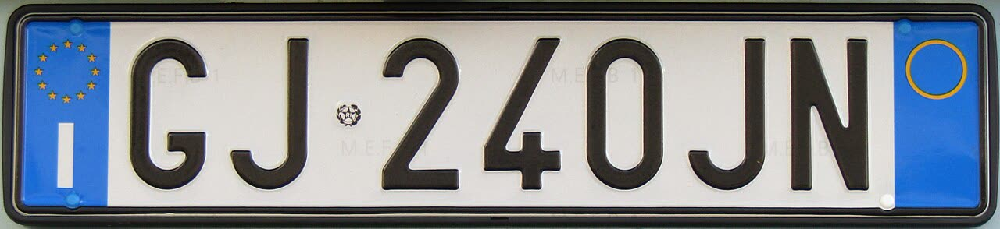

Targhe personalizzate a 600 euro nel nuovo Codice della strada: le scegli tu, ma restano all'auto
Il coro non regge
Chi grida alle altre priorità sbaglia bersaglio: nessuno è obbligato a comprarla. Il difetto è un altro: paghi una targa che non ti porti dietro.
Redazione Contrappunto · aggiornato il 30.10.2026


La targa è la piastra con lettere e numeri che identifica ogni veicolo. In Italia oggi la assegna lo Stato, in ordine: due lettere, tre cifre, due lettere, e non si può scegliere. Il 13 ottobre 2026 il governo ha approvato in via preliminare il nuovo Codice della strada, cioè la legge con le regole della circolazione. Dentro c'è la possibilità di chiedere, pagando, una targa con lettere e numeri scelti da sé: 600 euro per un'auto, 360 per una moto. Il 28 ottobre la presidente del Consiglio Giorgia Meloni l'ha annunciata presentando la legge di bilancio. Oggi non si può ancora chiedere: il testo deve passare da pareri e decreti, e le regole sono previste dal 2028.
Vedi di più: 9 parole spiegate, cosa si racconta
Cosa si raccontaLe testate di motori (ACI, Sicurauto, HDmotori, alVolante) l'hanno raccontata come un servizio: quanto costa, cosa si potrà scrivere, quando arriva. Le opposizioni e il Fatto Quotidiano come un governo a caccia di soldi; il Quotidiano Nazionale come il simbolo di una manovra senza visione, con altre priorità ignorate. Quasi nessuno si è chiesto se la targa resti a chi la paga. [L'Automobile (ACI)] [Sicurauto] [HDmotori] [alVolante] [Il Fatto Quotidiano] [Quotidiano Nazionale] [Quotidiano Nazionale]
- Codice della strada
- La legge che fissa le regole della circolazione: patenti, multe, limiti, targhe. Quello in vigore è del 1992; il governo ne sta scrivendo uno nuovo.
- Schema di decreto legislativo e legge delega
- Il Parlamento, con una legge delega (qui la 177 del 2024), autorizza il governo a scrivere una legge su un tema entro certi limiti. Lo schema è la bozza del governo: prima di diventare legge passa dai pareri di Consiglio di Stato, Regioni e Comuni (Conferenza unificata) e commissioni parlamentari.
- Regolamento e decreti attuativi
- Le norme di dettaglio che dicono come si applica una legge: moduli, formati, procedure. Senza, la legge resta sulla carta: è quello che è successo alla targa personalizzata dal 2002.
- Poligrafico dello Stato
- L'Istituto Poligrafico e Zecca dello Stato, la società pubblica che stampa targhe, passaporti e carte d'identità e conia le monete. È l'unico che può produrre le targhe.
- Motorizzazione civile
- L'ufficio del ministero dei Trasporti che immatricola i veicoli, cioè li registra e assegna la targa, e rilascia patenti e libretti.
- Reimmatricolazione
- La nuova registrazione di un veicolo già in strada, con una targa nuova: oggi serve, per esempio, quando la targa viene rubata, persa o si rovina.
- Targa personale e targa personalizzata
- Due cose diverse. La targa personalizzata ha lettere e numeri scelti da chi la chiede. La targa personale segue il proprietario da un'auto all'altra, anche se la combinazione è assegnata a caso.
- Legge di bilancio (manovra)
- La legge con cui ogni autunno il governo decide entrate e spese dello Stato per l'anno dopo. Il Parlamento la deve approvare entro il 31 dicembre.
- DVLA
- Driver and Vehicle Licensing Agency: l'agenzia del governo britannico che gestisce patenti e immatricolazioni, e vende le targhe personalizzate.
- Il nuovo Codice della strada, approvato in via preliminare il 13 ottobre, permette di chiedere targhe personalizzate: 600 euro per l'auto, 360 per la moto.
- Il 28 ottobre Giorgia Meloni l'ha rilanciata presentando la manovra; le regole dovrebbero valere dal 2028, ma servono ancora pareri e decreti.
- Secondo l'ACI la targa resta all'auto: se la vendi, la perdi.
Le testate di motori, dall'ACI a Sicurauto, l'hanno trattata come un servizio: prezzo, regole, date. Il Fatto Quotidiano e i Cinque Stelle come un governo che raccatta soldi. Il Quotidiano Nazionale come il simbolo di una manovra senza idee. E il Giornale, già nel 2024, scriveva che si poteva fare da subito. Non era vero: la norma c'era dal 2002, ma non è mai partita. [1] [2] [17] [18] [19] [14]
Cosa regge. Il prezzo: 600 euro, 500 al Poligrafico e 100 al ministero. E regge che sia facoltativa. Non regge che sia dietro l'angolo: il Codice deve passare dal Parlamento, poi servono regolamento, decreti e computer della Motorizzazione. Prima del 2028 è difficile vederla in strada. [1] [3] [12]
Chi paga? Solo chi la vuole. Gli altri continuano a pagare la targa normale, 41,78 euro. È il modo più pulito di fare cassa: lo Stato incassa da chi sceglie di spendere per una vanità, come nel Regno Unito, dove le targhe personalizzate hanno reso più di 301 milioni di sterline in un anno. Per questo chi dice «ci sono altre priorità» sbaglia bersaglio. Sulla manovra può avere ragione. Sulla targa no: non toglie niente a nessuno. [17] [23]
Il difetto vero è un altro. Per l'ACI la targa resta all'auto: la vendi, e la tua scritta se ne va con lei. Sulla macchina dopo, un'altra targa e altri 600 euro. Nel Regno Unito il numero è tuo: lo togli, lo tieni da parte, lo metti sull'auto nuova o lo rivendi. In Svizzera i cantoni le mettono all'asta: «SO 1» è andata a 390 mila franchi. [1] [25] [26]
Il nostro giudizio: un'idea liberale fatta a metà. Una cosa che paghi e non ti porti dietro vale meno, e chi la compra lo sa. La legge italiana ha già, dal 2010, una targa che segue la persona: è rimasta sulla carta. Basterebbe unire le due cose. La targa la scegli tu, la paghi tu, e resta tua. [13]
La verifica punto per punto19 passaggi, 26 fonti
Qui sotto ogni cosa scritta sopra, una per una, con le fonti. Confermato: lo dice un documento originale o più fonti lette. Plausibile: lo riportano fonti serie, ma non abbiamo letto l'originale. Discordante: le fonti danno numeri diversi, e diciamo quali. Ipotesi e Opinione sono il nostro ragionamento, separato dai fatti.
La norma · cosa c'è scritto
Il 13 ottobre 2026 il Consiglio dei ministri ha approvato in esame preliminare lo schema del nuovo Codice della strada. Secondo la nota del ministero dei Trasporti, il testo consente di rilasciare, su richiesta, targhe personalizzate.
Il prezzo è in una tabella dell'Allegato VI.2: per l'auto 500 euro al Poligrafico per la coppia di targhe, più 100 euro al ministero, in tutto 600. Per la moto 360. Chi la sceglie non paga la targa normale, oggi 41,78 euro.
La combinazione deve essere unica, non offensiva, ambigua o ingannevole, e leggibile per le forze dell'ordine e le telecamere. Formato e numero di caratteri li fisserà il regolamento. Le targhe le produce solo il Poligrafico.
La norma · la targa resta all'auto
Per l'ACI, come è scritta la norma, la targa personalizzata resta all'auto anche quando la si vende o la si dà in permuta: sull'auto nuova se ne chiede un'altra, diversa. Sulle auto già in strada si potrà avere solo se la targa va rifatta per furto, smarrimento o deterioramento.
I tempi
La delega a riscrivere il Codice viene dalla legge 177 del 2024, prorogata dalla legge 171 del 2026. Ora servono i pareri di Consiglio di Stato, Conferenza unificata e Parlamento. Il Codice entrerebbe in vigore il 30 aprile 2027, le nuove regole dal 1° gennaio 2028, forse dal 1° aprile; poi servono decreti e sistemi informatici della Motorizzazione.
Nel 2027 o nel 2028? Per Adnkronos con la manovra «arriva la norma attuativa»; Sicurauto legge l'annuncio come un anticipo al 2027, ma ricorda che serve comunque un decreto. ACI e HDmotori restano al 2028; per alVolante resta da chiarire.
Non regge · «si può già fare»
Non è una novità: l'articolo 100 del Codice permette di chiedere una combinazione a scelta dal 2002, ma solo nello schema due lettere, tre cifre, due lettere. Non è mai partita perché mancavano le norme di attuazione.
Nel settembre 2024 il Giornale titolava che personalizzare la targa «si può fare anche in Italia», con una procedura da 150 euro. Le altre fonti dicono il contrario: la norma c'era, la procedura no.
La targa che segue la persona
Esiste anche, sulla carta, una targa personale che segue il proprietario e non l'auto: la introdusse nel 2010 la legge 120. Non è mai stata attuata; nel 2019 il ministro Danilo Toninelli preparò un regolamento rimasto fermo. In Europa la usano Austria, Belgio, Slovacchia e Svizzera.
Fuori dall'Italia
Nel Regno Unito l'agenzia della motorizzazione (DVLA) ha incassato più di 301 milioni di sterline lordi in un anno, tra aprile 2025 e marzo 2026, da vendite e trasferimenti di targhe personalizzate. Lì il numero si toglie dall'auto, si conserva e si sposta su un'altra; nel 2019 i prezzi partivano da 250 sterline.
In Svizzera i cantoni mettono all'asta le targhe più ambite: a marzo 2026 «SO 1» ha portato al cantone di Soletta 390 mila franchi, record nazionale; il primato precedente era «ZH 24», 299 mila franchi nel 2024.
Le voci · chi la difende e chi la attacca
Il 28 ottobre, presentando la legge di bilancio, Giorgia Meloni l'ha chiamata «una nota che si potrebbe definire di colore»: «Ci si potrà più o meno sbizzarrire come si ritiene, ovviamente sostenendo un costo». E ha aggiunto che si fa in molti altri paesi.
Le opposizioni: per Francesco Silvestri (M5S) sono «pseudo–misure, che non affrontano in alcun modo gli enormi problemi del Paese»; per Mario Turco (M5S) il governo «prova a raccattare soldi dagli italiani con le targhe personalizzate». Il Fatto Quotidiano parla di un governo «a caccia di risorse».
La versione più forte della critica è di Raffaele Marmo sul Quotidiano Nazionale: la manovra «rischia di essere ricordata per le targhe personalizzate a pagamento», segno di prudenza senza riforme. inSella aggiunge che la priorità era un'altra: poter avere un duplicato della targa rovinata senza reimmatricolare il mezzo.
C'è poi un effetto pratico: oggi dalla targa si capisce più o meno l'anno dell'auto, e quindi la sua classe di inquinamento. Con le combinazioni a scelta questo legame si rompe, nota Adnkronos.
Il nostro ragionamento
Quanto incasserà lo Stato nessuno lo dice: nelle fonti lette non c'è una stima né delle richieste né del gettito. Quindi «fare cassa» non è dimostrato, né in un senso né nell'altro. Dei 600 euro, 100 vanno al ministero e 500 al Poligrafico, contro i 41,78 di una targa normale.
Ragionamento: I prezzi sono nel blocco 2 (ACI, Sicurauto, alVolante, il Fatto). Abbiamo cercato una stima di gettito nella relazione e nelle cronache senza trovarla; lo schema del Codice non è ancora pubblicato. Il Poligrafico è una società dello Stato, quindi anche quella parte resta in mano pubblica, ma non sappiamo quanta ne sia costo di produzione. Fiducia media perché l'assenza di una stima può dipendere da documenti che non abbiamo letto.
Legata all'auto, la targa vale meno. Nel Regno Unito il numero è di chi lo compra: lo sposta, lo conserva, lo rivende, e per questo c'è chi lo compra come investimento. Da noi, se l'ACI legge bene la norma, si pagano 600 euro per una cosa che si perde vendendo l'auto.
Ragionamento: Le regole britanniche sono sulla pagina ufficiale GOV.UK (blocco 10); nel sondaggio DVLA del 2019 il 17% diceva di vederle come un investimento (dvla-2019). La regola italiana è la lettura dell'ACI dello schema (blocco 4), ripresa da HDmotori, Auto361 e Adnkronos: una sola origine, e il regolamento può ancora cambiarla. Per questo fiducia media.
Chi dice «ci sono altre priorità» sbaglia bersaglio. La targa personalizzata non è obbligatoria e non toglie niente a nessuno: lo Stato incassa da chi sceglie di pagare una vanità. È il modo più liberale di fare cassa. Le critiche alla manovra possono avere ragione; questa no.
La critica giusta è un'altra: una targa che paghi e non ti porti dietro è un'idea fatta a metà. La legge ha già, dal 2010, una targa che segue la persona. Unitele: la targa la scegli tu e resta tua.
Fonti26, tutte con il link
- Targhe personalizzate: ecco quanto costeranno e quando arriveranno (L'Automobile (ACI)) · consultata il 29.10.2026
- Targa personalizzata in Italia già nel 2027: cosa c'è da sapere (Sicurauto) · consultata il 29.10.2026
- Targhe auto personalizzate in Italia: costeranno 600 euro, ma bisognerà aspettare (HDmotori) · consultata il 29.10.2026
- Targhe personalizzate anche in Italia, la novità nel nuovo Codice della Strada: regole, limiti e costi (HDmotori) · consultata il 29.10.2026
- Targhe personalizzate per auto e moto, c'è la conferma nel nuovo CdS (Everyeye Auto) · consultata il 29.10.2026
- Targhe personalizzate, cambia tutto in Italia: presto potremo scegliere lettere e numeri (Autoblog) · consultata il 29.10.2026
- Codice della Strada 2026: niente patente a 17 anni ma arrivano le targhe personalizzate (SmartWorld) · consultata il 29.10.2026
- Targhe personalizzate in Italia con il nuovo Codice della Strada: 600 euro la coppia, dal 2028 (Auto361) · consultata il 29.10.2026
- Targhe auto personalizzate già nel 2027? Ecco quanto costeranno (alVolante) · consultata il 29.10.2026
- Mit, stretta sulle minicar truccate, arrivano targhe personalizzate (lancio ANSA del 14 ottobre 2026, ripreso da l'Adige) (ANSA / l'Adige) · consultata il 29.10.2026
- Nuovo Codice della strada, ecco le novità (Milano Finanza) · consultata il 29.10.2026
- Nuovo Codice della strada, approvazione entro marzo 2027 (ItaliaOggi) · consultata il 29.10.2026
- Auto, in arrivo la targa personale. Ecco cos'è e se vale la pena (21 marzo 2019) (Il Sole 24 Ore) · consultata il 29.10.2026
- Personalizzare la targa dell'auto? Si può fare anche in Italia. Ecco come (15 settembre 2024) (il Giornale) · consultata il 29.10.2026
- Targhe personalizzate, la novità in Manovra. Meloni: "Ci si può sbizzarrire" (Adnkronos) · consultata il 29.10.2026
- Targhe personalizzate in Italia, Meloni: "Ci si potrà più o meno sbizzarrire" (Adnkronos (Prometeo)) · consultata il 29.10.2026
- Targhe personalizzate auto in Manovra: al costo di 600 euro (Il Fatto Quotidiano) · consultata il 29.10.2026
- Auto, sì alle targhe personalizzate: lettere e numeri a scelta, pagando (Quotidiano Nazionale) · consultata il 29.10.2026
- Manovra delle targhe: governo senza visione, il rigore non basta (Quotidiano Nazionale) · consultata il 29.10.2026
- L'invito di Giorgia Meloni agli italiani: "Divertitevi con le targhe personalizzate!". Ma costa caro (inSella) · consultata il 29.10.2026
- Targhe personalizzate per auto e moto in Italia: da quando, cosa si può scrivere e perché costano 600 euro (Fanpage) · consultata il 29.10.2026
- Targhe di lusso: un mercato che vale milioni (ma in Italia non si può) (Fleet Magazine) · consultata il 29.10.2026
- DVLA annual report and accounts 2025 to 2026 (Driver and Vehicle Licensing Agency (governo britannico)) · consultata il 29.10.2026
- 30 years on: 6 million personalised registrations sold (Driver and Vehicle Licensing Agency (governo britannico)) · consultata il 29.10.2026
- Private (personalised) number plates (GOV.UK) · consultata il 29.10.2026
- Solothurn license plate "SO 1" raises 390,000 francs (Keystone-SDA, 4 marzo 2026) (blue News) · consultata il 29.10.2026
Testo preparato con strumenti di intelligenza artificiale e pubblicato senza revisione umana. Come lavoriamo